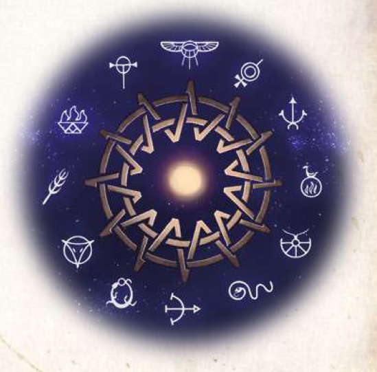

Wiki
Home
Charakter
Wiki
Götter und Kulte
Aventur braucht, um nicht in Dunkelheit zu versinken.

Die Gestalt der Welt
Dere besitzt neben Aventuri000 Meilen.
Die zwölf Götter
Praios
Die Wälder des Nordens
Die Steppen der Orks
Thorwal und das Gjalskerland
Die streitenden Königreiche
Das Mittelreich
Die Bingen der Zwerge
Die Insel Maraskan
Das Reich der Horas
Die Lande der Tulamiden
Aranien, Land der Herscherinnen
Kulte
Flüsse
Wetter
Wind